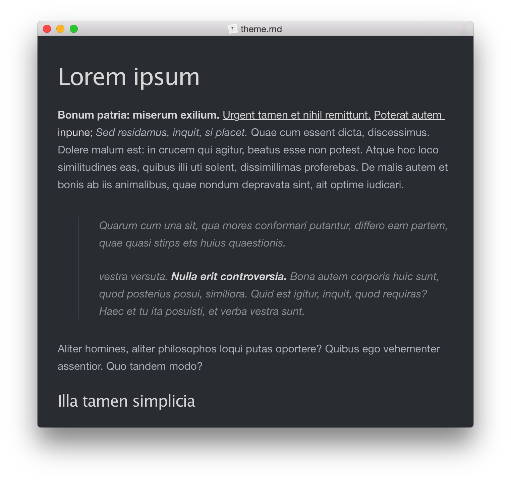
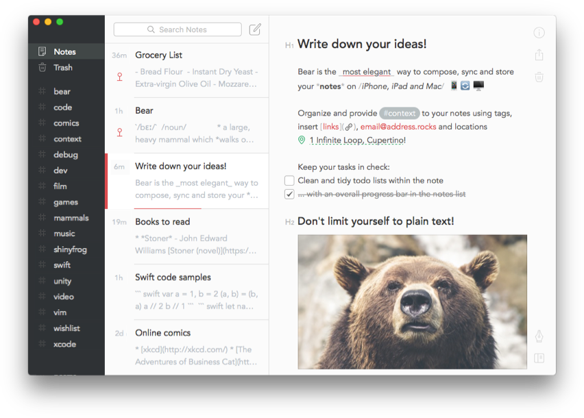
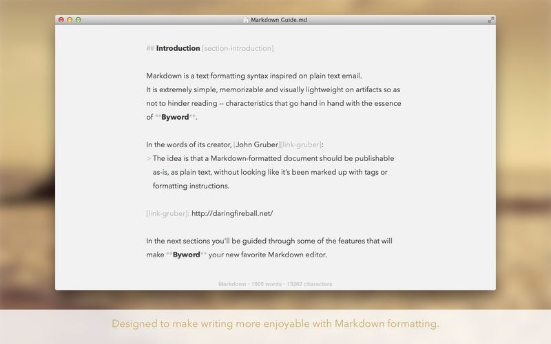
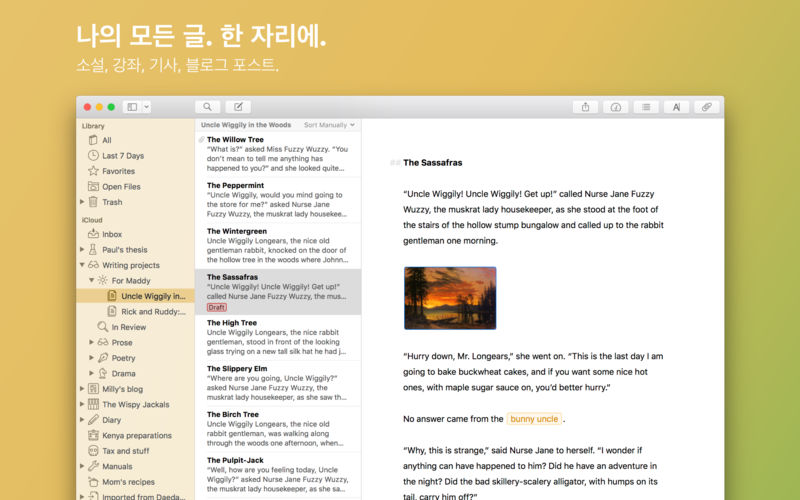
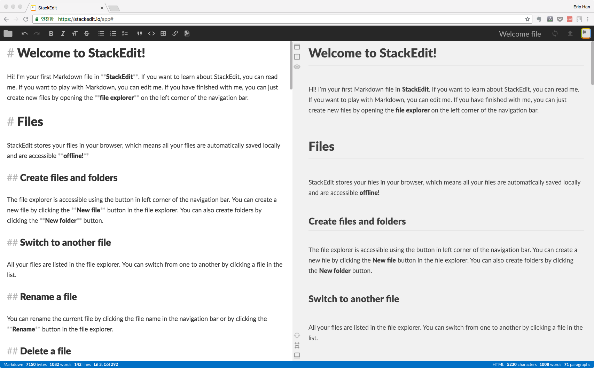
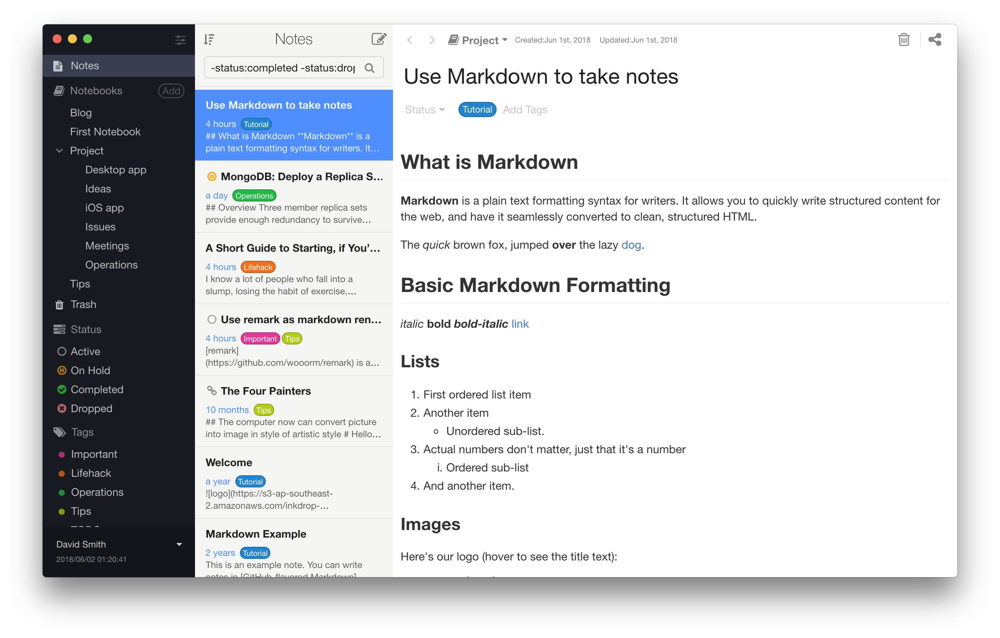

제가 블로그 초창기에 쓴 Atom 을 마크다운 에디터로 사용하기 포스트에 꾸준하게 많은 분들이 들어오셨습니다. 그만큼 쓸만한 마크다운 에디터를 찾으시는 분들이 많은 것 같습니다. 2년이 지난 지금, 제가 사용해 본 에디터들의 장단점을 소개해드리겠습니다.
마크다운 에디터들이 제공하는 핵심 기능은 비슷하고 자잘한 추가 기능이 많기 때문에 모두 다루지 않고, 장단점 위주로 다뤄보겠습니다. 이 중에는 애용하는 것들도 있고 하루 이틀 정도만 사용해 본 툴도 있습니다.
macOS 사용자의 선택
macOS 에는 Windows 보다 선택할 수 있는 옵션이 많습니다. 지금 소개해드리는 에디터 중에는 멀티 플랫폼을 지원하는 에디터도 있고 macOS 에서만 동작하는 에디터도 있습니다.
Typora

- 가격 : 무료
- 플랫폼 : macOS, Windows, Linux (스마트폰 미지원)
장점
- 프리뷰 화면에서 수정이 가능함 (WYSIWYG 방식)
- 다양하고 깔끔한 테마와 레이아웃 / 테마 CSS 직접 수정 가능
- 멀티 플랫폼 지원
- 베타 기간 중 무료
- LaTeX / 테이블 / UML Diagram 지원
- 포커스 모드 / 타자기 모드
단점
- 베타 버전이라 버그가 있을 수 있음
- 스마트폰 미지원
- 다른 플랫폼과 연동하려면 외부 저장소 필요
사용 소감
Typora 는 제가 가장 많이 사용하는 최애 에디터입니다. 디자인이 깔끔하고 테마 CSS 를 직접 수정할 수 있어서 커스터마이징이 유용합니다. 특히 프리뷰 화면에서 직접 수정할 수 있는 기능이 유용합니다. 다른 에디터들은 작성 화면과 프리뷰 화면이 나뉘어져 있는 경우가 있는데, 한 화면에서 바로 수정하고 확인할 수 있습니다. 작성 화면으로의 전환도 아주 쉽습니다. 사진은 어두운 테마(Night)가 적용된 화면입니다.
Bear

- 가격 : 기본 무료 / 프로 월간 구독 1.49달러
- 플랫폼 : macOS / iOS
장점
- 다양한 테마와 깔끔한 레이아웃
- 문서 간 링크 기능
- 태그 및 아카이브 기능
- 다양한 배포 옵션
- 앱과 자유로운 연동 (동기화)
단점
- 애플 계열 플랫폼만 지원
- 폴더 미지원으로 많은 문서를 분류하기 어려움
사용 소감
Bear 는 비교적 많이 알려져 있진 않지만 개인적으로 애용하는 에디터입니다. 깔끔한 레이아웃과 스마트폰 앱과의 연동이 좋습니다. 하지만 문서 분류 기능은 아쉽습니다. 태그 지원, 아카이브 기능, 다양한 보기 옵션, 문서 간 링크 기능으로 문서 분류를 지원하고 있습니다만, 폴더 기능이 없기 때문에 많은 문서를 관리하는 것은 쉽지 않습니다.
Byword 2

- 가격 : 12.09 달러(macOS) / 6.59 달러(iOS)
- 플랫폼 : macOS / iOS
장점
- 방해받지 않고 집중할 수 있는 간결한 디자인
- 깔끔한 테마 2종 (Light, Dark)
- 다양한 배포 (Medium, WordPress, tumblr, Blogger, Evernote)
- iCloud Drive 지원
단점
- 프리뷰 화면으로 전환이 불편
- macOS 와 iOS 따로 구입 필요
사용 소감
Byword 는 심플한 디자인으로 인기가 많은 에디터입니다. 꼭 필요한 기능만 가지고 집중해서 작업할 수 있게 도와줍니다. 하지만 프리뷰 화면을 보기 위해서 메뉴 혹은 단축키가 필요하고, Typora 와 달리 프리뷰 화면에서 수정이 불가능하기 때문에 불편해서 한동안 사용하다가 말았습니다. 가격 대비 쓸만한 지 모르겠네요.
Ulysses III

- 가격 : 월간 구독 5.49달러
- 플랫폼 : macOS / iOS
장점
- 다른 에디터들에 비해 전문적이고 많은 기능을 제공함
- 장문의 책 등을 쓰기에 최적화 됨
단점
- 예전엔 한 번 구매하는 방식에서 구독 방식으로 바뀜. 이미 구입한 사람들도 사용하려면 매달 돈을 내야해서 일부 사용자들의 반발이 있었음.
사용 소감
Ulysses 는 macOS 쪽에서는 가장 유명한 마크다운 에디터라고 할 수 있습니다. 폴더 기능을 지원하기 때문에 많은 문서를 관리할 수 있고, 목표와 진행 상황을 관리하는 등 헤비 유저일수록 유용하게 사용할 수 있습니다. 커스터마이징도 세세하게 설정이 가능하고 자동화된 백업 등 부가적인 기능도 좋습니다. 저는 예전에 이미 유료로 구입하고 얼마 사용하지 않던 중 매달 돈을 지불하는 구독 방식으로 변경되어 그 이후로 사용하지 않았습니다. 하지만 손에 익으면 익을수록 효율적으로 사용할 수 있는 에디터인 것 같습니다.
Windows 사용자의 선택
여기서 소개해드리는 에디터 2가지는 모두 멀티 플랫폼을 지원하기 때문에 macOS 에서도 사용 가능합니다. 다만 macOS 추천 목록에서는 제거했습니다.
StackEdit

- 가격 : 무료 (Apache License)
- 플랫폼 : 브라우저 기반으로 모든 플랫폼 가능 (스마트폰 브라우저도 지원)
장점
- 브라우저 기반으로 별도의 소프트웨어 설치 필요 없고 어디서든 접속 가능
- 브라우저 로컬 스토리지에 저장 + 계정 연동 시 온라인에 저장 가능 (Google Drive 등)
- 다양한 배포 옵션 (Google Drive, Dropbox, Github, Wordpress, Blogger 등)
- 내부에 마커 형식으로 메모처럼 코멘트를 달 수 있음 (구글 계정 로그인 필요)
- KaTeX / 테이블 / UML Diagram
단점
- 오프라인 시 사용 제약
- 온라인 스토리지 연동 안할 경우 데이터 손실 위험
- 테마 변경 기능 없음
사용 소감
StackEdit 는 마크다운을 작성할 수 있는 웹 사이트입니다. 브라우저에서 동작하기 때문에 따로 프로그램 설치가 필요 없고, 어느 플랫폼에서나 접근할 수 있다는 것이 가장 큰 장점입니다. 물론 어디서나 이어서 작업을 하기 위해서는 외부 클라우드 드라이브 계정을 연동해야 합니다. 부가 기능은 기본 기능에 충실한 편이고 테마를 따로 수정할 수가 없어서 저는 많이 사용하진 않았습니다. 멀티 플랫폼도 가능하지만 macOS 추천 목록에서는 제외했습니다.
Inkdrop

- 가격 : 월간 구독 4.99달러
- 플랫폼 : macOS, Windows, Linux / iOS, Android 지원
장점
- 다양한 플랫폼 지원
- 노트북 형식으로 폴더 지원
- 태그 + 4가지 상태 (Active, On Hold, Completed, Dropped)로 분류 가능
- 자체 패키지 매니저
ipm이 있어서 오픈소스 플러그인으로 확장 기능 설치 가능
단점
- 속도가 비교적 느림
- 디자인이나 UI가 비교적 떨어짐
사용 소감
눈에 띄는 장점은 역시 다양한 플랫폼에서 지원하는 것이고, 노트북 형태가 있어서 문서 관리가 쉬운 것입니다. 자체 패키지 매니저가 있어서 사용자들이 만든 플러그인을 설치할 수 있다는 점도 특이하지만 아직 플러그인이 많은 편은 아닙니다. 디자인이나 UI 의 디테일한 면들이 다른 에디터보다 떨어진다고 생각해서 개인적으로 선호하진 않지만 분명 차별화된 기능을 가진 에디터입니다
이번 포스트에서는 제가 사용해 본, 혹은 인기가 많은 마크다운 에디터들을 살펴봤습니다. 저는 Typora 와 Bear 를 가장 많이 사용하고 Ulysses 를 사용해볼까 고려 중입니다.
여러분은 어떤 마크다운 에디터를 사용하시나요?